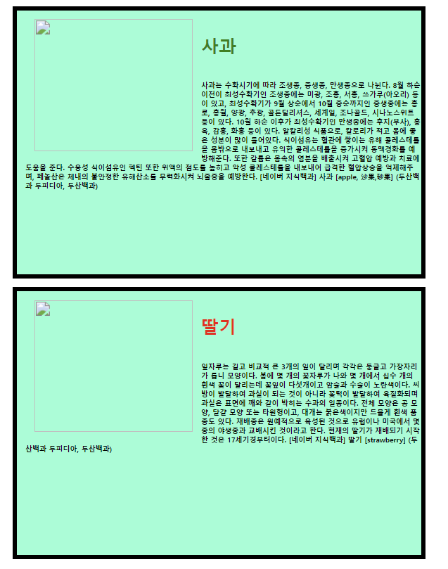
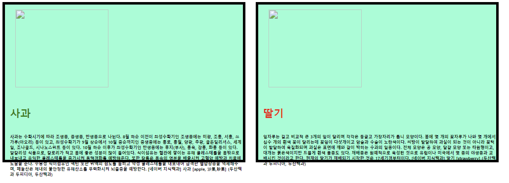

- Servlet
- Java EE의 서버 측 컴포넌트로, 클라이언트의 HTTP 요청을 처리하고 동적인 응답을 생성하는 역할을 한다.
- 특징
- 요청 처리: 라이언트로부터 전송된 HTTP 요청 데이터를 읽고, 이를 바탕으로 필요한 처리를 수행
- 응답 생성: 처리 결과를 HTTP 응답 형태로 클라이언트에게 전송한다. (이 때, HTML, JSON, XML 등 다양한 형식의 데이터를 전송할 수 있다)
- 상태 관리: 클라이언트의 세션 정보를 유지하고 관리하여 연속적인 사용자 경험을 제공
- JSP (JavaServer Pages)
- HTML 문서 내에 Java 코드를 삽입하여 동적인 웹 페이지를 생성할 수 있는 기술
- 특징
- 태그 기반 문법: JSP는 HTML 문서 내에
<% %>와 같은 특수 태그를 사용하여 Java 코드를 삽입할 수 있다. - 서블릿 변환: JSP 파일은 실행 시 서블릿으로 변환되어 웹 컨테이너에 의해 실행된다.
- 표현 언어 (EL): JSP는 표현 언어 (Expression Language, EL)를 지원하여, Java 코드 없이도 간단한 데이터 접근과 처리를 수행할 수 있다.
- JSTL: JSP 표준 태그 라이브러리 (JavaServer Pages Standard Tag Library, JSTL)는 JSP에서 자주 사용하는 기능을 제공하는 태그 라이브러리로, 반복문, 조건문, 데이터 포맷팅 등을 지원한다.
- 태그 기반 문법: JSP는 HTML 문서 내에
- Tomcat
- apache 소프트웨어 재단에서 개발한 서블릿 및 JSP 컨테이너
- Java Servlet과 JavaServer Pages (JSP) 기술을 구현하여 웹 애플리케이션을 실행할 수 있도록 한다.
- 특징
- Servlet 실행
- JSP 실행
- 웹 애플리케이션 배포: 톰켓은 WAR (Web ARchive) 파일을 배포하고 관리하여 여러 웹 애플리케이션을 동시에 실행할 수 있게 함.
정리
💡 톰켓은 서블릿과 JSP를 실행할 수 있는 컨테이너를 제공하고, 서블릿은 HTTP 요청을 처리하고 응답을 생성하는 서버 측 컴포넌트를, JSP는 동적인 웹 페이지를 생성할 수 있는 기술을 제공한다.
HTML
<!DOCTYPE html>
<html xmlns:th="http://www.thyleaf.org">
<head>
<title>Welcome Page</title> // 제목 페이지
<meta http-equiv="Content-Type" content="text/html; charset=UTF-8">
<!--<meta charset="UTF-8"> 한글을 지원하겠습니다-->
</head>
<style type="text/css"> // css를 인라인 형태로 넣기 위해서 body 태그전에 넣음
div{
border: 1px solid red; /*모든 div 태그에 해당 스타일 적용*/
}
span{
border: 1px dotted blue;
font-weight: bold;
color: 0000000; /*검은색*/
font-style: italic;
text-decoration: underline;
}
</style>
<body>
<h1>Hello HTML!!</h1>
<p th:text="'안녕하세요. '+${data}"></p>
<div style="border: 3px dotted blue;"> <!--화면 1줄 영역--> <!--Css -> 변수 : 값; -->
<font size ="1">크기=1</font>
<font size ="3" color="#ff6600">크기=3, 색상=오렌지</font><br>
<font size ="5" face="맑은고딕">크기=5, 글꼴=맑은고딕</font><br>
<font size ="7" color="#0000ff" face="궁서">크기=7, 색상=파랑, 글꼴=궁서</font><br>
</div>
<div>
<font size="3" color="#003300" face="굴림">
폰트태그는
<font size="5" color="#FF0000" FACE="궁서">중첩사용</font>
도 가능합니다.
</font>
</div>
<!--글자의 모양-->
<div>
<strong>글자를 굵게 표시합니다.</strong>
<br>
<u>글자에 밑줄을 표시합니다</u>
<br>
<i>글자를 기울임 표시합니다.</i>
<br>
<strong><u><i>굵게 밑줄 기울임을 표시합니다.</i></u></strong>
</div>
<!--단어의 문자의 영역 지정 -->
<div>
<span style="border: 1px solid magenta">SPAN</span> 태크는
<span>문장 단위로 텍스트 영역을 지정하는 것</span>인데
그 자체로는 아무 역할도 하지 않고,
문장의 특정 구역에 <span>Css스타일</span>을 지정할 때 사용합니다.
</div>
<hr> <!--경계선-->
</body>
</html><head>태그 :head태그는 HTML 문서의 머리 부분을 정의하며, 문서의 메타데이터와 설정 정보를 포함<meta>태그 : 문서의 메타데이터를 정의. 메타 태그는 다양한 종류의 메타데이터를 설정하는 데 사용된다.<span>태그 : 문장 단위로 텍스트 영역을 지정하는 것
<!DOCTYPE html>
<html lang="en">
<head>
<meta charset="UTF-8">
<title>Title</title>
<style type="text/css">
div {
border: 2px solid cornflowerblue;
}
</style>
</head>
<body>
<!--이미지 태그 사용법-->
<p>
<img src="/img1.gif" alt="망상토끼"/><br>
<img src="http://localhost:8080/img1.gif" alt="망상토끼"/>
</p>
<!--이미지 크기 조정-->
<p>
<img src="/img1.gif" width="200" height="200" alt="망상토끼"/>
</p>
<!--링크 - 네이버 이동-->
<p>
<a href="http://www.naver.com">
<img src="/img1.gif" width="100" height="100" alt="망상토끼">
</a>
</p>
</body>
</html>- src → source의 약자로 해당 태그가 참조하는 파일의 경로를 지정한다.
- href : "hypertext reference"의 약자로, 앵커 태그
<a>가 참조하는 링크의 URL을 지정한다.
<!DOCTYPE html>
<html lang="en">
<head>
<meta charset="UTF-8">
<title>Title</title>
<style type="text/css">
/*id 속성 # 중에서 blank인것*/
#blank{
height: 1000px;
}
# {
height: 1000px;
}
div{
height:1000px;
}
</style>
</head>
<body>
<h1>링크의 기본 사용 방법</h1>
<ul>
<li type="square"><a href="./2_img">현재 사이트의 특정 파일로 링크</a> </li> // type = "square"
<li><a href="http://www.naver.com" target="_blank"> // type -> default는 동그라미
다른 사이트로 이동(새창)</a> </li>
</ul>
<hr>
<div id="blank">빈 공간</div>
<hr>
<h1>현재 페이지에서의 링크 이동</h1>
<ul>
<li></li>
</ul>
<div>빈 공간</div>
<hr>
</body>
</html><!DOCTYPE html>
<html lang="en">
<head>
<meta charset="UTF-8">
<title>Title</title>
</head>
<body>
<form>
<fieldset>
<legend>내용 입력하기</legend>
<div>
<label for="id">아이디</label> <!--for=""와 id="" 같아야 한다.-->
<input type="text" name="user_id" id="id" maxlength="5" placeholder="아이디 입력"/>
// placeholder -> 입력칸에 흐리게 글씨 나옴
</div>
<div>
<label for="user_pw">비밀번호</label>
<input type="password" name="user_pw" id="user_pw" maxlength="20">
</div>
<div>
<label for="memo">자기소개</label>
<!--<textarea name="memo" id="memo" maxlength="100"></textarea>-->
<!--<textarea name="memo" id="memo" rows="5" cols="50" maxlength="100">
빈 공간을 잡고 들어감 -> 따라서 엔터로 띄우면 안됨.
</textarea>-->
<textarea name="memo" id="memo" rows="5" cols="50" maxlength="100"></textarea>
</div>
<div>
<label for="data">숨겨진 항목</label>
`<!--<input type="hidden" name="data" id="data" value="숨겨진 데이터">-->`
<input type="text" name="data" id="data" value="숨겨진 데이터">
</div>
</fieldset>
</form>
</body>
</html>
<form>태그 : 사용자 의견이나 정보를 알기 위해 입력할 큰 틀을 만드는 데 사용되기 때문이다. 폼은 입력된 데이터를 한 번에 서버로 전송힌다.- form의 내부에는
<input>,<select>,<textarea>등의 태그들이 포함된다. - name 속성의 값과 유저가 입력한 값이 한 쌍이 되어 서버측에 전달된다.
- form의 내부에는
<fieldset>태그 : 폼 태그 안에 관련되어 있는 폼 요소들을 그룹화할 때 사용한다. 그리고<fieldset>태그 하위에<legend>태그를 사용하여 그룹화한 폼 엔리먼트들을 목적에 맞게 이름을 지정한다.<label>속성을 사용하여 그룹 이름을 지정한다.
<!DOCTYPE html>
<html lang="en">
<head>
<meta charset="UTF-8">
<title>Title</title>
</head>
<body>
<form>
<fieldset>
<div>
<!--체크박스 -> 사각형 선택지, 여러 개 선택 가능 -->
<input type="checkbox" name="hobby" id="hobby1" value="축구" checked="checked"/> <!--default로 체크가 되어 있음-->
<label for="hobby1">축구</label> <!--id와 for를 맞춰줘야 사용자한테 편리 -> 위의 체크박스를 눌러도 체크되고 이 줄의 축구를 눌러도 체크됨-->
<input type="checkbox" name="hobby" id="hobby2" value="농구"/>
<label for="hobby2">농구</label>
<input type="checkbox" name="hobby" id="hobby3" value="야구"/>
<label for="hobby3">야구</label>
</div>
</fieldset>
<fieldset>
<legend>성별 선택하기</legend>
<div>
<!--라디오 버튼 -> 동그란 체크박스, 둘 중 하나 선택 가능-->
<input type="radio" name="gender" id="gender_m" value="M" checked>
<label for="gender_m">남자</label>
<input type="radio" name="gender" id="gender_f" value="F">
<label for="gender_f">여자</label>
</div>
</fieldset>
</form>
</body>
</html><!DOCTYPE html>
<html lang="en">
<head>
<meta charset="UTF-8">
<title>Title</title>
</head>
<body>
<form>
<fieldset>
<div>
<!--드롭다운(싱글타입) -> 콤보 박스 -> 스크롤 중 하나만 선택-->
<label for="telecom">이동통신사 선택</label>
<select name="telecom" id="telecom">
<option>-----선택하세요------</option> <!-- 유효한 값이 아니므로 value를 넣을 필요 없음-->
<option value="SKT" selected="selected">SKTelecom</option> <!-- selected 해주면 기본적으로 SKT가 뜸-->
<option value="KT">KT</option>
<option value="U+">U+</option>
</select>
</div>
</fieldset><br>
<fieldset>
<legend>스마트폰 운영체제 선택하기</legend>
<div>
<!--드롭다운(멀티타입)-->
<label for="smartphone">스마트폰 운영체제</label>
<select name="smartphone" id="smartphone" multiple size="5"> <!--ctrl+클릭, shift 클릭 적용 가능-->
<option value="android" selected="selected">안드로이드</option>
<option value="ios">ios</option>
<option value="windows" >windows</option>
<option value="windows" >windows</option>
<option value="windows" >windows</option>
<option value="windows" >windows</option>
<option value="windows" >windows</option>
<option value="windows" >windows</option>
<option value="windows" >windows</option>
<option value="windows" >windows</option>
<option value="windows" >windows</option>
<option value="windows" >windows</option>
<option value="windows" >windows</option>
<option value="windows" >windows</option>
<option value="windows" >windows</option>
<option value="windows" >windows</option>
</select>
</div>
</fieldset>
</form>
</body>
</html><!DOCTYPE html>
<html lang="en">
<head>
<meta charset="UTF-8">
<title>Title</title>
<style type="text/css">
div {
border: 2px solid cornflowerblue;
}
</style>
</head>
<body>
<!--이미지 태그 사용법-->
<p>
<img src="/img1.gif" alt="망상토끼"/><br>
<img src="http://localhost:8080/img1.gif" alt="망상토끼"/>
</p>
<!--이미지 크기 조정-->
<p>
<img src="/img1.gif" width="200" height="200" alt="망상토끼"/>
</p>
<!--링크 - 네이버 이동-->
<p>
<a href="http://www.naver.com">
<img src="/img1.gif" width="100" height="100" alt="망상토끼">
</a>
</p>
</body>
</html>- datalist 요소는 input 요소에 대해 미리 정의된 옵션 리스트를 명시해 주는 요소이다
- 사용자는 텍스트를 바로 입력해도 되고, 드롭다운 메뉴에서 미리 정의한 옵션 중의 하나를 골라도 된다.
- 단, input 요소의 list 속성값이
datalist 요소의 id 속성값과 반드시 일치해야 연결됩니다.
<!DOCTYPE html>
<html lang="en">
<head>
<meta charset="UTF-8">
<title>Title</title>
</head>
<body>
<form enctype="multipart/form-data" action=""> <!--mutipart를 form-data를 해야 파일 업로드가 가능-->
<fieldset>
<legend>파일 첨부</legend>
<div>
<label for="photo">사진선택</label>
<input type="file" name="photo" id="photo"> <!--파일 타입으로 파일을 선택-->
</div>
</fieldset>
</form>
</body>
</html>📄 9_form, 9_result.html(GET, POST)
- 9_form.html
<!DOCTYPE html> <html lang="en"> <head> <meta charset="UTF-8"> <title>Title</title> </head> <body> <!--<form action="9_result.html">--> <form method="get" action="/9_result"> <!--<form method="post" action="9_result.html"> 넘어가는 data가 안보임--> <fieldset> <legend>이름 입력하기</legend> <div> <label for="username">이름 : </label> <input type="text" name="user_name" id="username"> </div><br> <div> <input type="submit" value="입력완료"> <!--submit은 action을 찾아서 이동 -> Get 방식으로 /9_result api 호출--> <input type="reset" value="초기화"> <!--초기화 버튼 누르면 초기화됨--> <!--<input type="button" value="버튼입력완료"> button은 onclick 없으면 아무 반응이 없음--> <input type="button" value="버튼입력완료" onclick="javascript:location.href='9_result.html'"> <!--자바 스크립트와 연동해서 처리--> <input type="image" src="/ok.png" width="30" height="30" alt="OK"> <!--image는 자동으로 submit을 진행한다--> <input type="image" src="/ok.png" width="30" height="30" alt="OK" onclick="return false"> <!--자동으로 submit 안하게 됨 -> onclick=return false--> </div> </fieldset> </form> </body> </html>- submit ~ action :
<form>태그 안에 있는 입력 상자의 데이터를 들고 페이지 이동 - 페이지 이동 (HTTP 메서드)
- GET
- default 요청
- Query String(주소 표시줄 url)을 통해 이동

- 한국어의 민낯
http://localhost:8080/9_result?user_name=홍길동 -> 브라우저에서 보기 좋게 해놓음 http://localhost:8080/9_result?user_name=%ED%99%8D%EA%B8%B8%EB%8F%99 -> 한글의 진짜 얼굴 http://localhost:8080/9_result?user_name=?? -> 한글이 죽어버림
- POST
- 클라이언트가 post로 요청 시 이동
- 주소에 입력 정보가 표시되지 않기 때문에 보안에 더 좋음 → 회원가입
- GET
<input type="button" /> => 자동 submit<input type="image" src="" alt="" /> => 자동 submit- onclick=”return false” 해주면 자동 submit 안함
- submit ~ action :
- 9_result
<!DOCTYPE html> <html lang="en"> <head> <meta charset="UTF-8"> <title>Title</title> </head> <body> <h1>입력 결과를 전송받기 위한 페이지</h1> <P>사용자가 form에 입력한 내용을 전송받아서, 후속 처리를 수행하게 된다.</P> </body> </html>
- 10_table.html
<!DOCTYPE html> <html lang="en"> <head> <meta charset="UTF-8"> <title>Title</title> </head> <body> <table border="1" width="300"> <!--제목 영역--> <thead> <tr> <!--행, 줄--> <th width="50%" height="50">No</th> <!--열, 칸--> <!--width="50% 화면의 정 가운데로 정렬--> <th>획득 포인트</th> <!--th는 가운데로 정렬하고, 글자가 굵게 나옴--> </tr> </thead> <!--본문 영역--> <tbody> <tr align="center"> <!--align에는 "left" "right" "center"가 존재--> <td>2</td> <td>루비 결제 5000G</td> <!--td는 기본이 왼쪽 정렬--> </tr> <tr align="center"> <td>3</td> <td>가입 축하 10000 지급</td> <!--td는 기본이 왼쪽 정렬--> </tr> </tbody> <!--하단 영역--> <tfoot> <tr> <th width="50" height="30">합계</th> <th>15000G</th> </tr> </tfoot> </table> </body> </html>
- 11_table.html
<!DOCTYPE html> <html lang="en"> <head> <meta charset="UTF-8"> <title>Title</title> </head> <body> <table border="1" width="300"> <!--제목 영역--> <thead> <tr> <!--행, 줄--> <th width="50%" height="50">No</th> <!--열, 칸--> <!--width="50% 화면의 정 가운데로 정렬--> <th>획득 포인트</th> <!--th는 가운데로 정렬하고, 글자가 굵게 나옴--> </tr> </thead> <!--본문 영역--> <tbody> <tr align="center"> <!--align에는 "left" "right" "center"가 존재--> <td>2</td> <td>루비 결제 5000G</td> <!--td는 기본이 왼쪽 정렬--> </tr> <tr align="center"> <td>3</td> <td>가입 축하 10000 지급</td> <!--td는 기본이 왼쪽 정렬--> </tr> </tbody> <!--하단 영역--> <tfoot> <tr> <th width="50" height="30">합계</th> <th>15000G</th> </tr> </tfoot> </table> </body> </html>
- 12_table.html
<!DOCTYPE html> <html lang="en"> <head> <meta charset="UTF-8"> <title>Title</title> </head> <body> <h1>Cell과 내용 사이의 여백 - cellpadding</h1> <table border="1"cellpadding="30"> <tr align="center"> <td>1-1</td> <td>1-2</td> </tr> </table> <hr> <h1>Cell과 내용 사이의 여백 - cellspacing</h1> <table border="1" cellspacing="30"> <tr align="center"> <td>1-1</td> <td>1-2</td> </tr> </table> <hr> <h1>cellspacing은 보통 0으로 씀</h1> <table border="1" cellspacing="0"> <tr align="center"> <td>1-1</td> <td>1-2</td> </tr> </table> <hr> <h1>강사님이 시킨거</h1> <table cellpadding="30" border="=1" cellspacing="0" align="left"> <tr> <td width="100">1-1</td> <td>1-2</td> </tr> <tr> <td width="100">2-1</td> <td>2-2</td> </tr> <tr align="center"> <td colspan="2">3-1</td>` </tr> <tr> <td rowspan="2"><img src="../static/img1.gif"></td> <td>4-2</td> </tr> <tr> <td>5-2</td> </tr> </table> </body> </html>
📄 mark, abbr, dfn, cite, small, ruby 태그
<!DOCTYPE html>
<html lang="en">
<head>
<meta charset="UTF-8">
<title>Title</title>
</head>
<body>
<p>옵티컬아트는 굳이 번역한다면 <strong>광학적 미술</strong>이라고 할 수 있는데,
<mark>광학적</mark>이란 망막에 접수된 자극이 시신경에 의해 자각되어진다는 것을 의미한다.</p>
<hr>
<p><abbr title="HyperText Markup Language">HTML</abbr>은 제목, 단락, 목록 등 과 같은
본문을 위한 구조적 의미를 나타내는 것뿐만 아니라 링크, 인용과 그 밖의 항목으로 구조적 문서를 만들 수 있는 방법을 제공한다.</p>
<hr>
<p>창이 작고 벽이 넓은 로마네스크 교회의 실내는 거의 모두
<dfn title="소석회에 모래를 섞은 모르타르를 벽면에 바르고 수분이 있는 동안 채색하여 완성하는 회화">프레스코회</dfn>로 장식되었다.</p>
<p><dfn><abbr title="HyperText Mark Language">html</abbr></dfn>은
웹 문서를 만들기 위하여 사용하는 기본적인 프로그래밍 언어의 한 종류이다. 하이퍼 텍스트를 작성하기 위해 개발되었다.</p>
</body>
<p>고갱은 1988년 브르타뉴ㅠ의 퐁타벙에서 <cite>천사와 싸우는 야콥</cite>을 그리고 나서 반 고흐에게 편지를 썼는데 ...</p>
<hr>
<p>이 기사는 <small>© ☎ 홍길동 기자</small>가 작성하였습니다.</p>
<hr>
<h1><ruby>構<rt>구</rt>石<rt>석</rt>氣<rt>기</rt></ruby>시대</h1>
</html><mark>태그 : 구문을 하이라이팅한다<abbr>태그 : 약어 또는 두 문자어를 나타내는데, ‘title’ 속성으로 약어의 원형을 나타낸다- → 마우스 갔다대면 title 내용 보임
<dfn>태그(definition) : 단어의 정의를 나타낸다. title’ 속성으로 정의 표현한다.<abbr>태그와 같이 사용할 수 있다.- → 얘도 마우스 갔다대면 title 내용 보임
<cite>태그 : 작품 제목을 표현<ruby>태그 :주로 일본어나 한자에 발음이나 주석을 얹는 방법으로 많이 쓰인다.

<!DOCTYPE html>
<html lang="en">
<head>
<meta charset="UTF-8">
<title>Title</title>
</head>
<body>
<h1>다음은 '웹 접근성 연구소'에서 정리한 웹 접근성 정의 내용입니다</h1>
<blockquote cite="http://www.wah.or.kr/Accessibility/define.asp"
title="'웹 접근성 연구소'에서 정리한 웹 접근성 정의 내용입니다.">
<p>
월드 와이드 웹 (World Wide Web)을 창시한 팀 버너스 리(Tim Berners-Lee)는
웹이란 '장애에 구애 없이 모든 사람들이 손쉽게 정보를 공유할 수 있는 공간'이라고 정의하였으며,
웹 콘텐츠를 제 작할 때에는 장애에 구애됨이 없이 누구나 접근할 수 있도록 제작하여야 한다고 하였다.
이렇듯 웹 창시자가 웹의 기본적 철학에서 웹 접근성 부문을 강조함에도
불구하고, 웹 접근성을 바라보는 입장에 따라 다르게 정의하고 있다.
</p>
<p>
월드 와이드 웹 (World Wide Web)을 창시한 팀 버너스 리(Tim Berners-Lee)는
웹이란 '장애에 구애 없이 모든 사람들이 손쉽게 정보를 공유할 수 있는 공간'이라고 정의하였으며,
웹 콘텐츠를 제 작할 때에는 장애에 구애됨이 없이 누구나 접근할 수 있도록 제작하여야 한다고 하였다.
이렇듯 웹 창시자가 웹의 기본적 철학에서 웹 접근성 부문을 강조함에도
불구하고, 웹 접근성을 바라보는 입장에 따라 다르게 정의하고 있다.
</p>
<hr>
<p>
월드 와이드 웹 (World Wide Web)을 창시한 팀 버너스 리(Tim Berners-Lee)는 웹이란 <br>
<q cite="http://www.wah.or.kr/Accessibility/define.asp">
'장애에 구애 없이 모든 사람들이 손쉽게 정보를 공유할 수 있는 공간'이라고 정의하였으며,
웹 콘텐츠를 제 작할 때에는 장애에 구애됨이 없이 누구나 접근할 수 있도록 제작하여야 한다고 하였다.
이렇듯 웹 창시자가 웹의 기본적 철학에서 웹 접근성 부문을 강조함에도
불구하고, 웹 접근성을 바라보는 입장에 따라 다르게 정의하고 있다.
</q>
</p>
</blockquote>
</body>
</html>
<!--
* <blockquote>
- 다른 사람의 말이나 글, 혹은 다른 소스를 인용하는 경우에 사용한다.
- 블록 요소이다.
- 들여쓰기 형태로 출력된다.
- cite 속성 : 해당 컨텐츠의 출처를 나타낸다.
- title 속성 : 내용을 요약해 입력
* <q>
- 다른 사람의 말이나 글, 혹은 다른 소스를 인용하는 경우에 사용한다.
- 인라인 요소이다.
- 인라인 형태의 짧은 인용문을 작성할 때 사용하기 때문에 title 속성은 필요하지 않다.
- “ ”로 묶는다.
--><blockquote>태그 : 다른 사람의 말이나 글, 혹은 다른 소스를 인용하는 경우에 사용한다.- 블록 요소임
<q>태그 : 다른 사람의 말이나 글, 혹은 다른 소스를 인용하는 경우에 사용한다.- 인라인 요소임
<pre> 태그 : 내용을 있는 그대로 보여줄 때 사용
- 일반적으로 코드의 예제를 보여주기 위한 방안으로 활용된다.
<code> : 코드임을 알리는 용도이다.
<!DOCTYPE html>
<html lang="en">
<head>
<meta charset="UTF-8">
<title>Title</title>
</head>
<body>
<pre>
<code>
<script src="js/jquery.js"></script>
<script>
$(".selector").click(function(){
$(".box").hide();
});
</script>
</code>
</pre>
</body>
</html>- DL(Definition List)의 약자. 정의 목록 : 어떤 용어를 정의하여 풀어 나열한다.
- DT(Definition Term) 정의 : <dd>는 <dt>가 적용된 곳에서 한 탭 들여쓰기 적용된다.
- DD(Definition Description)과 함께 쓴다. 정의에 대한 해설, <br>태그 속성이 포함된다.
<!DOCTYPE html>
<html lang="en">
<head>
<meta charset="UTF-8">
<title>Title</title>
</head>
<body>
<h3>도시 소개</h3>
<hr>
<dl>
<dt>California</dt>
<dd>맑고 화창한 날씨가 좋고 태평양의 아름다운 해변을 가진 멋진 주</dd>
<dt>Florida</dt>
<dd>맑고 화창한 날씨가 좋고 태평양의 아름다운 해변을 가진 멋진 주</dd>
<dt>California</dt>
<dd>맑고 화창한 날씨가 좋고 태평양의 아름다운 해변을 가진 멋진 주</dd>
</dl>
</body>
</html>HTML 5
Semantic은 '의미의', '의미론적인'이라는 뜻을 가진 형용사이다. 따라서 시맨틱 태그란 의미가 있는 태그를 말한다.
<!DOCTYPE html>
<html lang="en">
<head>
<meta charset="UTF-8">
<title>Title</title>
<style type="text/css">
.header{
width: 100%;
height: 15%;
background: yellow;
}
.nav{
width: 15%; height: 70%;
float: left;
background: orange;
}
.section{
width: 70%; height: 70%;
float: left;
background: olivedrab;
}
.aside{
width: 15%; height: 70%;
float: left;
background: orange;
}
.footer{
width: 100%; height: 15%;
clear: both; /*display: flex; 이것도 된다*/
background: plum;
}
</style>
</head>
<body>
<header class="header">header</header>
<nav class="nav">nav</nav>
<section class="section">section</section>
<aside class="aside">aside</aside>
<footer class="footer">footer</footer>
</body>
</html>
사진, 도표, 삽화 등을 담는 컨테이너 역할을 하는 태그
figcation은 사진에 대한 설명 기술 가능
<!DOCTYPE html>
<html lang="en">
<head>
<meta charset="UTF-8">
<title>Title</title>
</head>
<body>
<header>
<h1>전체 문서에 대한 헤더(header)</h1>
</header>
<hr>
<nav>
<a href="https://www.naver.com">네이버</a> |
<a href="https://store.kakao.com/kakaofriends">카카오 프렌즈</a> |
<a href="https://www.google.com">구글</a>
</nav>
<section>
<header>
<h2>섹션 부분에 대한 헤더(header)</h2>
<p>헤더 부분에 들어간 단락</p>
</header>
<p>It's a mountain rabbit. Where are you going? Where are you going by hopping?</p>
</section>
<hr>
<h1>figure 요소와 figcaption 요소</h1>
<figure>
<img src="../static/1.jpg" alt="카카오 프렌즈 단체사진" width="350" height 270>
<figcaption>[ 그림 1. 카카오 프렌즈 단체사진 ]</figcaption>
</figure>
<footer>
<p>전체 문서에 대하나 footer</p>
<p>copyright all rights reserved</p>
<p>☎ 연락처 : 02-1234-5678</p>
</footer>
</body>
</html>📄 HTML 총정리
<div> 태그
division의 약자로 ‘경계를 분할하다’ 라는 뜻 내포.
<div> 태그는 공간분할 태그이자 레이아웃을 나타내기 위해 사용된다.
대부분의 태그들은 Inline 태그와 Block 태그로 나뉜다.
- Inline 태그
- 자신의 내용과 앞뒤 태그의 내용을 같은 라인에 출력하는 태그
- 대표적으로
<span>태그가 존재 - width, height, margin-top/bottom이 적용되지 않아 다른 방법이 필요
- block 태그 ( ⭐반응형임 : 줄였다가 늘였다가 할 때 같이 반응)
- 자신의 내용과 앞뒤 태그의 내용을 다른 라인에 출력하는 태그이며
한 라인을 독점적으로 점유 - 대표적으로
<div>태그 - width, height, margin-top/bottom이 적용됨
- 자신의 내용과 앞뒤 태그의 내용을 다른 라인에 출력하는 태그이며
- float 속성
- float 속성은 주로 웹페이지에서 이미지 어떻게 띄워서 텍스트와 함께 배치할 사용되거나 각 객체를 왼쪽, 오른쪽으로 정렬하여 배치할 떄 사용됩니다.
- 예시 코드
<!DOCTYPE html> <html lang="ko"> <head> <meta charset="utf-8"> <title>Phoenix editor</title> <style> div{ background-color: aquamarine; font-size: 20px; font-weight: 600; width: 450px; height: 300px; border: 5px solid #000; margin: 10px; padding-left: 10px; float: left; } img{ float: left; width:180px; height:150px; padding: 10px; } p{ font-size: 8px; } </style> </head> <body> <div> <img src="%EC%82%AC%EA%B3%BC.jpg"> <h4 style="color: green">사과</h4> <p> 사과는 수확시기에 따라 조생종, 중생종, 만생종으로 나뉜다. 8월 하순 이전이 최성수확기인 조생종에는 미광, 조홍, 서홍, 쓰가루(아오리) 등이 있고, 최성수확기가 9월 상순에서 10월 중순까지인 중생종에는 홍로, 홍월, 양광, 추광, 골든딜리셔스, 세계일, 조나골드, 시나노스위트 등이 있다. 10월 하순 이후가 최성수확기인 만생종에는 후지(부사), 홍옥, 감홍, 화홍 등이 있다. 알칼리성 식품으로, 칼로리가 적고 몸에 좋은 성분이 많이 들어있다. 식이섬유는 혈관에 쌓이는 유해 콜레스테롤을 몸밖으로 내보내고 유익한 콜레스테롤을 증가시켜 동맥경화를 예방해준다. 또한 칼륨은 몸속의 염분을 배출시켜 고혈압 예방과 치료에 도움을 준다. 수용성 식이섬유인 펙틴 또한 위액의 점도를 높히고 악성 콜레스테롤을 내보내어 급격한 혈압상승을 억제해주며, 페놀산은 체내의 불안정한 유해산소를 무력화시켜 뇌졸중을 예방한다. [네이버 지식백과] 사과 [apple, 沙果,砂果] (두산백과 두피디아, 두산백과) </p> </div> <div> <img src="%EB%94%B8%EA%B8%B0.jpg"> <h4 style="color: red">딸기</h4> <p> 잎자루는 길고 비교적 큰 3개의 잎이 달리며 각각은 둥글고 가장자리가 톱니 모양이다. 봄에 몇 개의 꽃자루가 나와 몇 개에서 십수 개의 흰색 꽃이 달리는데 꽃잎이 다섯개이고 암술과 수술이 노란색이다. 씨방이 발달하여 과실이 되는 것이 아니라 꽃턱이 발달하여 육질화되며 과실은 표면에 깨와 같이 박히는 수과의 일종이다. 전체 모양은 공 모양, 달걀 모양 또는 타원형이고, 대개는 붉은색이지만 드물게 흰색 품종도 있다. 재배종은 원예적으로 육성된 것으로 유럽이나 미국에서 몇 종의 야생종과 교배시킨 것이라고 한다. 현재의 딸기가 재배되기 시작한 것은 17세기경부터이다. [네이버 지식백과] 딸기 [strawberry] (두산백과 두피디아, 두산백과) </p> </div> </body> </html> - 실행화면
- div 태그 css
float: left을 없앴을 경우
- img 태그 css
float: left을 없앴을 경우
<p> 태그
p 태그는 paragraph → 절, 단락이라는 뜻
→ 문장의 단락을 표시하는데 사용
<img> 태그
<img src="/img1.gif" width="200" height="200" alt="망상토끼"/>- src : 이미지 소스 url
- alt : 이미지를 가져오는데 실패했을 경우 보여줄 대체 텍스트를 명시함
<a> 태그
하이퍼 링크를 걸어주는 태그
속성
- href: 클릭 시 이동할 링크
- target: 링크를 여는 방법
_self: 현재 페이지 (기본값)_blank: 새 탭_parent: 부모 페이지로, iframe 등이 사용된 환경에서 쓰입니다._top: 최상위 페이지로, iframe 등이 사용된 환경에서 쓰입니다.
<html>
<body>
<a href="http://www.naver.com">Go Naver</a><br>
<a href="http://google.co.kr" target="_blank">Go Google (new window)</a>
</body>
</html>